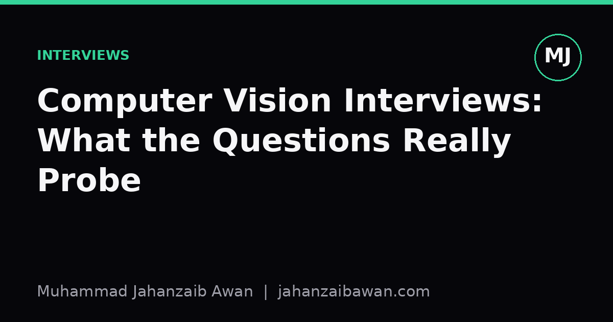

Computer Vision Interviews: What the Questions Really Probe
Behind every question about IoU thresholds or data augmentation is a deeper test of whether you understand evaluation, leakage, and failure modes.

Why these questions exist at all
When I prepare for or think about computer vision interviews, I try to stop treating each question as a trivia prompt and start asking what failure mode it is designed to expose. Nobody actually cares whether you can recite the formula for intersection over union from memory. They care whether you understand why IoU exists, where it breaks down, and what you would do when it gives you a misleading picture of model quality. The question is a proxy for a much more useful trait: can you reason about evaluation under realistic conditions.
This matters because computer vision has a particular way of looking fine on paper and failing badly in production. A classifier can report ninety-six percent accuracy and still be useless if the test set shares backgrounds, lighting, or even the same physical objects with the training set. Interviewers who have shipped vision systems know this, so their questions are often disguised leakage checks. 'How did you split your data' sounds procedural, but it is really asking whether you have been burned before and learned from it.
Once you see interviews this way, the whole exercise becomes less about memorising architectures and more about demonstrating judgement. A candidate who says 'I would use a ResNet backbone with a feature pyramid' without being asked about the data pipeline first is answering a question nobody posed. The stronger answer starts with how the data was collected and split, because that is where most real-world vision projects actually go wrong.
The data leakage question in disguise
Consider a common scenario: you are asked to build a defect detector for images of manufactured parts, and the dataset consists of video frames extracted at several frames per second from a handful of production runs. If you split frames randomly into train and test sets, you will almost certainly get frames from the same run, sometimes the same part, in both sets. Your model does not need to learn what a defect looks like; it can memorise lighting quirks and conveyor belt positions specific to that run. You might report ninety-four percent test accuracy, present it confidently, and still deploy a system that collapses on the next production run because it never saw a genuinely new environment.
The correct split groups by run or by physical part, so that no instance of the same object or session appears in both train and test. When interviewers ask 'how would you validate this model', they are testing whether you would catch this before it costs a client months of wasted deployment. A candidate who immediately asks 'how were the frames sampled, and could the same scene appear in both splits' is signalling exactly the kind of scepticism that prevents expensive failures.
The same logic extends to questions about augmentation and test time behaviour. If you augment images before splitting, rather than after, you can leak near-duplicate images across train and validation, inflating validation scores in a way that will not hold on genuinely unseen data. Interviewers who ask about your augmentation pipeline in detail are rarely interested in which library you used; they want to know whether you apply augmentation only to the training fold and keep validation and test data untouched.
There is also a subtler version of this: temporal leakage in video or sensor-linked datasets, where frames close together in time are highly correlated. A model can appear to generalise well simply because adjacent frames are nearly identical, not because it has learned anything robust. Recognising this and proposing a time-aware or group-aware split is one of the clearest signals of practical maturity an interviewer can look for.
Metrics, baselines, and knowing when a number is lying to you
Another recurring theme is metric literacy. Questions about precision, recall, mAP, or calibration are rarely about definitions; they are about whether you know which metric matches the actual cost of errors. Suppose you are building a system to flag suspicious frames in a quality control line, and false negatives are far more costly than false alarms because a missed defect reaches a customer. If you optimise purely for accuracy, you can get a model that predicts 'no defect' almost always, since defects might only occur in two percent of frames, and still score ninety-eight percent accuracy while catching almost nothing. An interviewer asking 'is accuracy the right metric here' is testing whether you would notice this trap before deployment, not whether you can define accuracy.
Baselines get the same disguised treatment. When someone asks 'what would you compare your model against', they want to know if you understand that a fine-tuned convolutional network claiming ninety-one percent accuracy means little if a simple colour histogram classifier or a nearest-neighbour approach already achieves eighty-seven percent on the same data. Without that baseline, you cannot tell how much of your result comes from genuine learning versus how easy the task happened to be. Strong candidates volunteer a baseline before being asked, because it shows they default to scepticism about their own results rather than needing to be prompted.
Calibration questions work similarly. A model producing confidence scores that do not reflect true likelihood, for instance predicting ninety-nine percent confidence on images it gets wrong a third of the time, is dangerous in any pipeline where a downstream threshold triggers automated decisions. Asking about calibration is a way of probing whether you think about a model as a component in a larger decision system, not as an isolated classifier chasing a leaderboard score.
What to actually do with this
The practical takeaway is simple: prepare for computer vision interviews by rehearsing the questions behind the questions. Before an interview, walk through a project you know well and ask yourself how the data was split, whether leakage could have crept in through duplicate scenes or temporal correlation, what a trivial baseline would have scored, and which metric actually reflected the cost of getting things wrong. If you can answer those four things clearly for any project you discuss, most surface-level questions about architectures or specific layers become easy to answer honestly, because you already understand the system you built rather than just the model you trained.